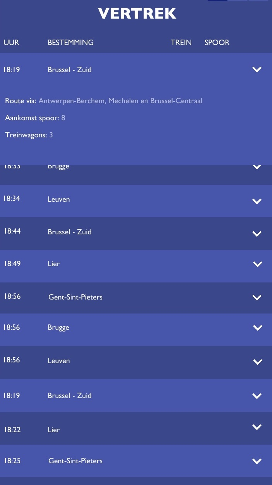
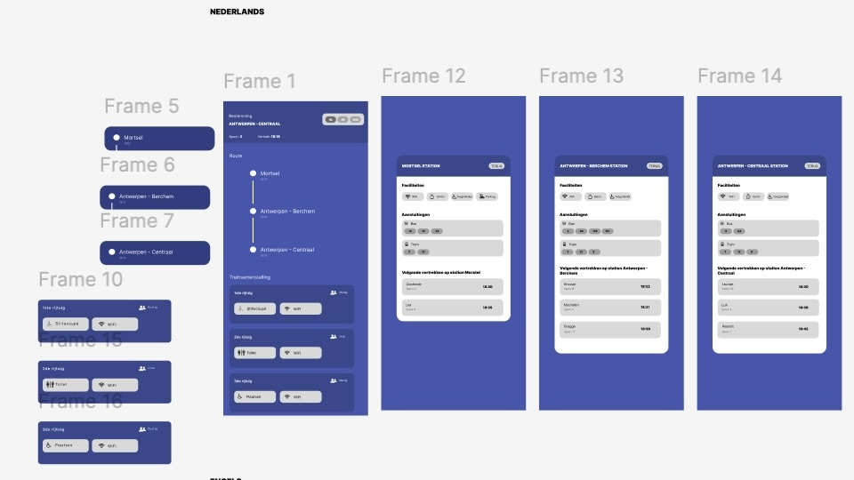
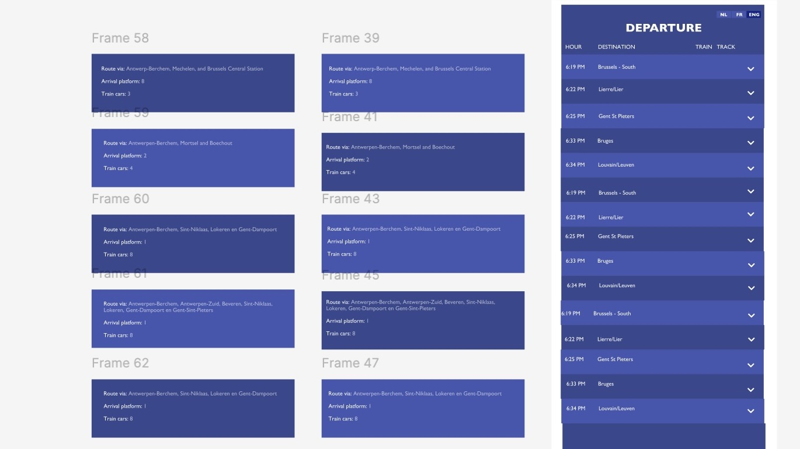
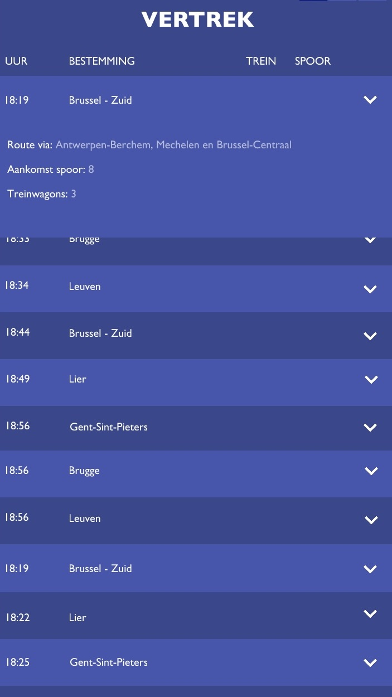
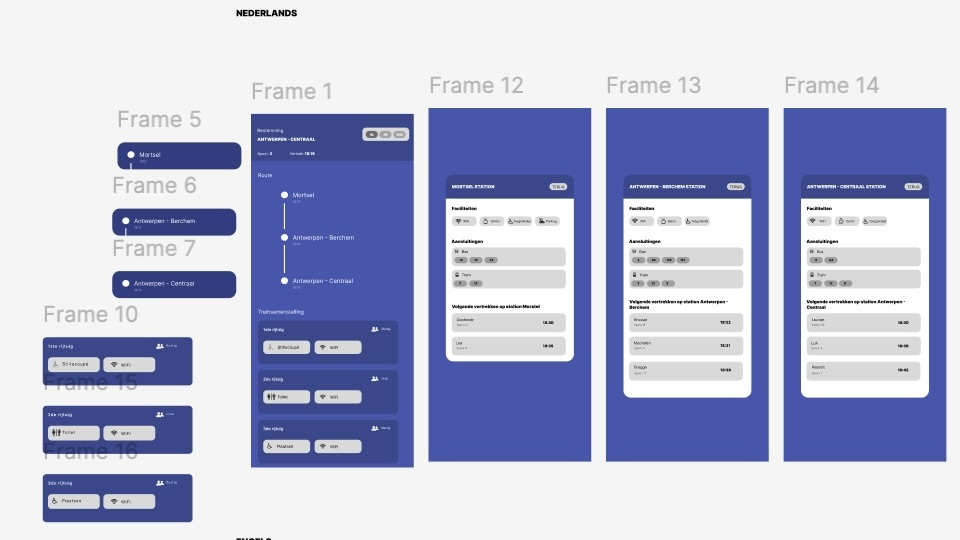
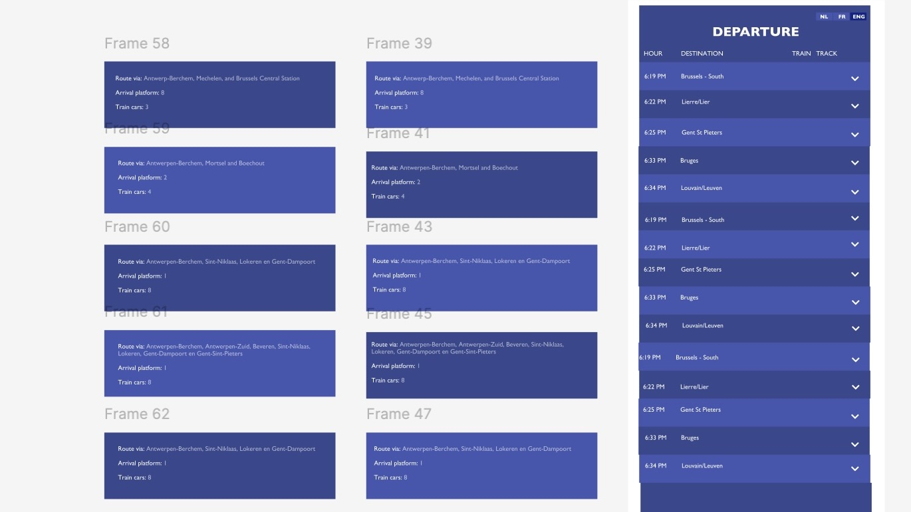

Week 11
Eerste interacties
Feedback
Uit de ontvangen feedback van de docenten bleek dat de huidige versie van mijn mobiele schermontwerpen nog te veel informatie tegelijk toont, wat de gebruiksvriendelijkheid vermindert. Als tip werd er meegegeven om tweaks toe te voegen en typografische aanpassingen door te voeren om de duidelijkheid en leesbaarheid te verbeteren. Op basis van deze feedback heb ik gekozen om bepaalde zaken anders te ordenen. Bijvoorbeeld niet de tussenstops mee te vermelden rechtstreeks onder de bestemming maar om met een dropdown menu te werken. Ook heb ik verder nagedacht over het complete plaatje omdat medestudenten aangaven dat het geheel wat eenvoudig lijkt en het een idee is om andere kleuropties te proberen voor een ander effect.
Opdracht
De opdracht van deze week bestond uit het toevoegen van de eerste interacties aan onze mobiele schermontwerpen.
Werkwijze
Deze week ben ik te werk gegaan door deskresearch te doen en andere apps te analyseren om te begrijpen hoe gelijkaardige functies en interacties worden uitgewerkt. Daarnaast heb ik extra informatie opgezocht buiten het lesmateriaal, onder andere via YouTube, om mijn kennis verder te verdiepen. De feedback van medestudenten heb ik bewust meegenomen in het proces, vooral omdat ik zelf ook nog niet volledig tevreden was over het kleurgebruik. Door te experimenteren en te spelen met verschillende kleurencombinaties heb ik het effect op de uitstraling en gebruiksvriendelijkheid onderzocht. Deze aanpak hielp om het ontwerp stap voor stap te verbeteren.
Geleerde inzichten
Dankzij deze opdracht heb ik ingezien hoe waardevol deskresearch is. Door andere apps te analyseren en extra informatie op te zoeken buiten het lesmateriaal, kreeg ik beter inzicht in gangbare patronen en best practices binnen interface- en interaction design. Ook de feedback van medestudenten bleek een belangrijk leermoment. Het bevestigde dat kleurgebruik en visuele hiërarchie een grote invloed hebben op de uitstraling en leesbaarheid van een ontwerp. Door te experimenteren met verschillende kleurencombinaties heb ik geleerd hoe kleine aanpassingen een groot effect kunnen hebben op het totaalgevoel van de applicatie.
Vooruitblik naar volgende week
Volgende week zal ik verder werken aan het bestaande ontwerp en analyseren waar extra interacties kunnen worden toegevoegd om de gebruiksvriendelijkheid van de app verder te optimaliseren. De focus ligt op het verfijnen van bestaande schermen en het verbeteren van de gebruikersflow, zodat de app consistenter aanvoelt. Ook ga ik mijn eerste versie van de applicatie laten testen door anderen zodat ik volgende week kan werken aan eventuele verbeteringen voor usability flow.
 




